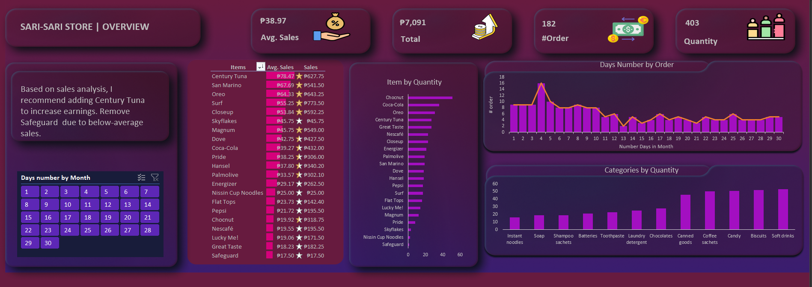

Sari-Sari Store | Overview
Unveiling Insights and Driving Success with Comprehensive Data Analysis and Visualization
SITUATION:
- As part of the course "SP201: Essential Excel Skills for Data Preparation and Analysis" from SPARTAPH, the participants were presented with a real-world data analysis scenario.
- The objective of the scenario was to create an interactive and visually appealing dashboard that would provide valuable insights into financial data.
TASK:
- To accomplish this, the participants were required to perform various data preparation and analysis tasks using Excel and Power Pivot.
- The specific tasks included:
- Aling Lala, a business owner, had a set of sales data that needed to be cleaned and transformed into a dashboard using Power Pivot.
- Answering specific questions based on the sales data:
- How much was her total sales in 30 days?
- What item did she sell the most?
- What item should Aling Lala stock up on daily?
- What day did she sell the most variety of items?
- What item can she add or remove to increase her average daily earnings?
- Does she need to get other data to get insights?
ACTION:
- To tackle the tasks, participants took the following actions:
- Data Cleaning and Preparation:
- Importing the raw sales data into Excel and Power Pivot.
- Checking for missing values, duplicates, and inconsistent data to ensure data quality.
- Creating calculated columns or measures.
- Total Sales Calculation:
- Creating a measure in Power Pivot to calculate the total sales amount for the 30-day period.
- Best Selling Item:
- Creating a measure to calculate the total sales for each item.
- Using a visualization (e.g., bar chart) to identify the item with the highest sales.
- Stock Replenishment:
- Calculating the average daily sales for each item.
- Identifying the item with the highest average daily sales.
- Suggesting Aling Lala stock up on this item daily to meet demand.
- Variety of Items Sold:
- Creating a measure to count the number of unique items sold on each day.
- Using a visualization (e.g., line chart) to identify the day with the highest item variety.
- Increase Average Daily Earnings:
- Calculating the average daily earnings for each item.
- Identifying the item with the lowest average daily earnings.
- Suggesting adding or removing this item to improve the overall average daily earnings.
- Insights and Additional Data:
- Evaluating the current dataset to determine if it contains all the necessary information for analysis.
- Identifying any data gaps that may prevent deeper insights.
- If required, recommending collecting additional data to gain more meaningful insights.
RESULT:
- By following the STAR method and applying essential Excel skills, the participants successfully cleaned and transformed the sales data into an interactive dashboard using Power Pivot.
- They provided valuable insights to Aling Lala, the business owner, on her total sales, best-selling item, stock replenishment strategies, and more.
- The project demonstrated their proficiency in data preparation and analysis, showcasing their ability to create effective financial dashboards for real-world scenarios using EXCEL.
Location
Philippines, Iloilo City
Mobile number
Social
- © Untitled
- Design: HTML5 UP